A qualidade da captura com a facilidade da modelagemCapture quality with the ease of modeling
Um plugin de guitarra gratuito e de código aberto que toca o som real de amplificadores e pedais gravados, e deixa você ajustar o timbre girando os botões, como num equipamento de verdade.
A free, open-source guitar plugin that plays the real sound of recorded amps and pedals, and lets you shape your tone by turning the knobs, just like real gear.
VST3, AU, LV2 e programa independenteVST3, AU, LV2 and standalone app
Capturas NAM A2 da TONE3000NAM A2 captures from TONE3000
Licença GPL versão 3GPL version 3 license
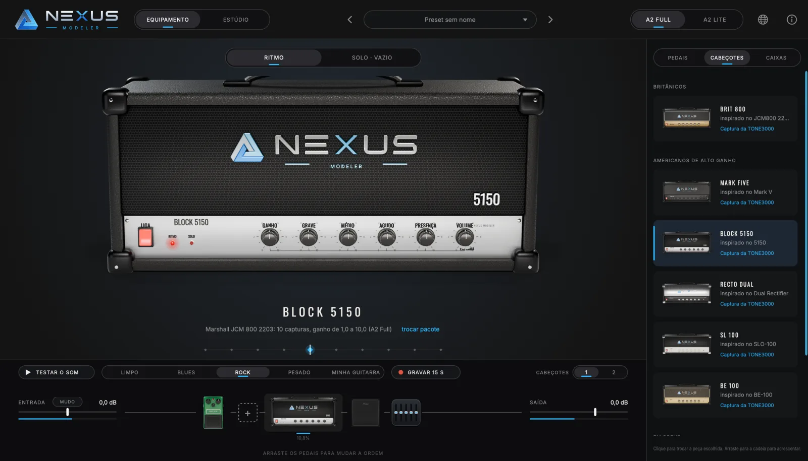
O cabeçote Brit 800 tocando um pacote de 11 capturas, do ganho 0 ao 10.The Brit 800 head playing a pack of 11 captures, from gain 0 to 10.
A premissaThe premise
Até hoje, era preciso escolherUntil now, you had to choose
Existem dois jeitos de ter som de amplificador no computador. Cada um tem uma vantagem que falta no outro. O Nexus junta as duas.
There are two ways to get amp tone on a computer. Each has a strength the other lacks. Nexus brings them together.
Mundo 1World 1
ModelagemModeling
Um programa imita, por cálculo, o circuito do amplificador. Você gira os botões e timbra à vontade.
Software imitates the amp's circuit with math. You turn the knobs and dial in any tone.
Fácil de ajustarEasy to adjust
O som é uma simulaçãoThe sound is a simulation
+
Mundo 2World 2
CapturaCapture
Uma inteligência artificial aprende o som de um equipamento real, gravado num ajuste. É o som de verdade, mas congelado: para mudar, você troca de arquivo.
An AI learns the sound of real gear, recorded at one setting. It's the real thing, but frozen: to change it, you swap files.
Som real do equipamentoThe gear's real sound
Preso a um único ajusteStuck at one setting
=
Nexus Modeler
Os dois juntosBoth at once
O som real das capturas, com os botões funcionando como num amplificador. Você gira, o Nexus cuida do resto por dentro.
The real sound of captures, with knobs that work like a real amp. You turn, Nexus handles the rest behind the scenes.
Som realReal sound
Fácil de ajustarEasy to adjust
Como funcionaHow it works
O botão troca a capturaThe knob swaps the capture
Quem grava um amplificador costuma publicar um pacote com várias capturas: uma com o ganho em 0, outra em 1, em 2, e assim por diante até 10. No Nexus, esse pacote vira um único amplificador.
People who capture an amp often publish a pack with several captures: one with gain at 0, another at 1, at 2, and so on up to 10. In Nexus, that pack becomes a single amp.
Você gira o ganhoDo cabeçote ou do drive do pedal, como faria no equipamento.
You turn the gainOn the amp head or the pedal's drive, as you would on real gear.
A próxima captura “aquece”Ela escuta o som recente da guitarra por um instante, para entrar já no ponto certo.
The next capture “warms up”It listens to the guitar's recent sound for a moment, so it comes in already in step.
A troca leva 30 milésimos de segundoUma passagem suave de uma para a outra, sem clique e sem estalo, mesmo tocando.
The swap takes 30 millisecondsA smooth handover from one to the other, with no click or pop, even while you play.
Sem abrir pasta nenhuma: o Nexus descobre sozinho qual captura é de qual posição pelo nome do arquivo.
No folders to open: Nexus works out which capture belongs to which position from the file name.
012345678910
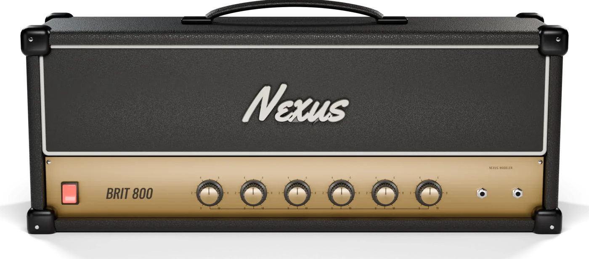
EqualizadorTone stack
Grave, médio e agudo como no circuito realBass, middle and treble like the real circuit
Os botões de tonalidade do Nexus seguem o circuito de verdade de cada família de amplificador, com a mesma interação entre eles. Assim, mexer no médio de um cabeçote britânico soa como mexer no médio de um cabeçote britânico.
Nexus tone knobs follow the real circuit of each amp family, with the same interaction between them. So turning the mids on a British-style head sounds like turning the mids on a British-style head.
O truque está em aplicar só a diferença entre o ajuste em que a captura foi gravada e o ajuste que você escolheu.
The trick is to apply only the difference between the setting the capture was recorded at and the setting you pick.
Botões na posição da gravação: o som é exatamente o da captura, sem nenhuma mudança.
Knobs at the recorded position: the sound is exactly the capture, untouched.
Botões fora dessa posição: o Nexus soma só o que o circuito real mudaria.
Knobs away from that position: Nexus adds only what the real circuit would change.
EquipamentosGear
Inspirados em clássicos, com nome próprioInspired by classics, with names of their own
Cada peça é modelada e renderizada em 3D pelo próprio projeto. Cada botão tem 101 imagens: arraste para cima ou para baixo, segure Shift para o ajuste fino e dê dois cliques para voltar ao padrão.
Every piece is modeled and rendered in 3D by the project itself. Each knob has 101 frames: drag up or down, hold Shift for fine control and double-click to reset.
Brit 800
Inspirado no cabeçote britânico de rock dos anos 80, de um canal e ganho alto. O ganho troca as capturas; grave, médio, agudo e presença seguem o circuito de tonalidade britânico.
Inspired by the classic 1980s British rock head, single channel and high gain. Gain swaps captures; bass, middle, treble and presence follow the British tone circuit.
CanaisChannels1, como o original1, like the original
CapturasCapturesUma por posição do ganhoOne per gain position
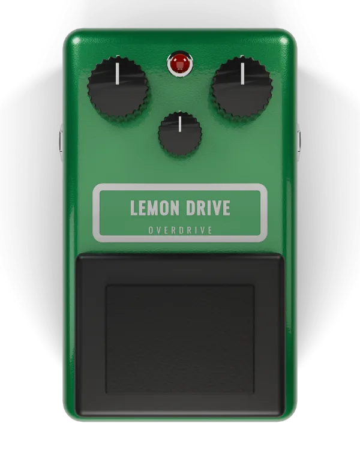
Lemon Drive
Overdrive verde de três botões, inspirado no clássico que empurra o amplificador.
Green three-knob overdrive, inspired by the classic amp pusher.
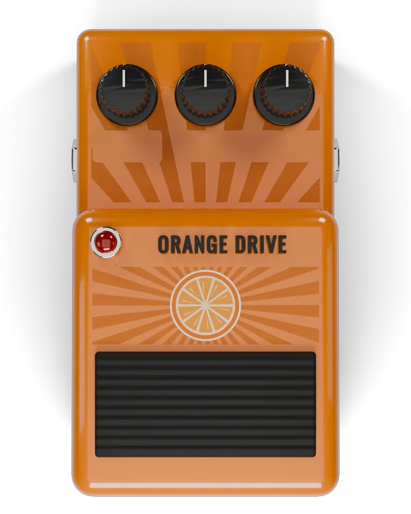
Orange Drive
Distorção compacta laranja, inspirada na mais famosa de todas as distorções de pedal.
Compact orange distortion, inspired by the most famous stompbox distortion of all.
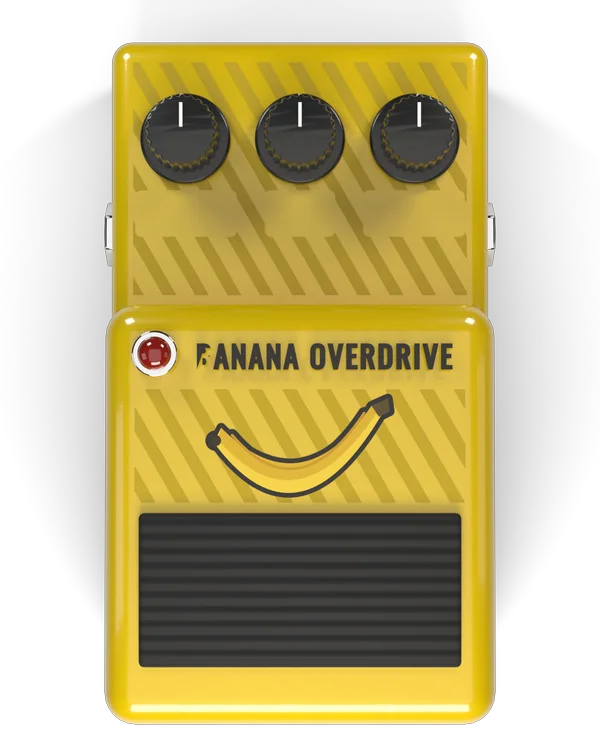
Banana Overdrive
Overdrive compacto amarelo, inspirado no clássico de som médio e cheio.
Compact yellow overdrive, inspired by the classic with a full, mid-rich voice.
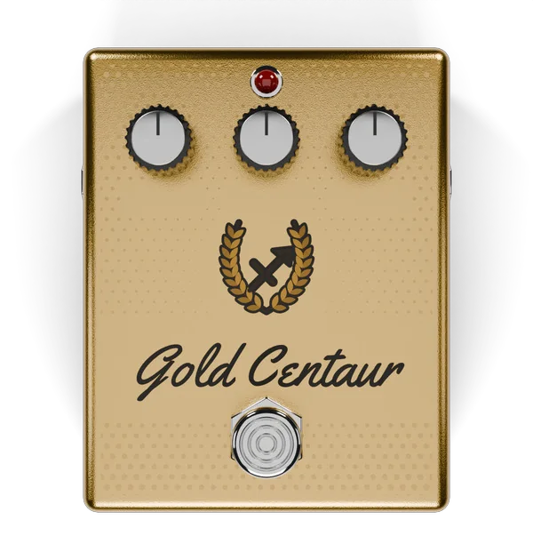
Gold Centaur
Overdrive dourado de luxo, inspirado no pedal mais cobiçado e transparente da história.
Luxury gold overdrive, inspired by the most sought-after transparent pedal in history.
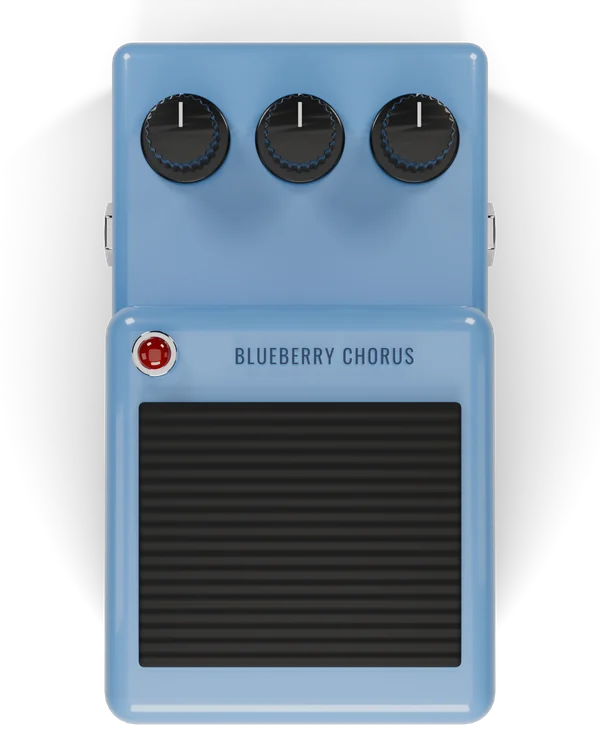
Blueberry Chorus
Chorus azul, inspirado no clássico que deixa o som largo e brilhante. Efeito do próprio Nexus, sem captura.
Blue chorus, inspired by the classic that makes the sound wide and shimmering. Built into Nexus, no capture needed.
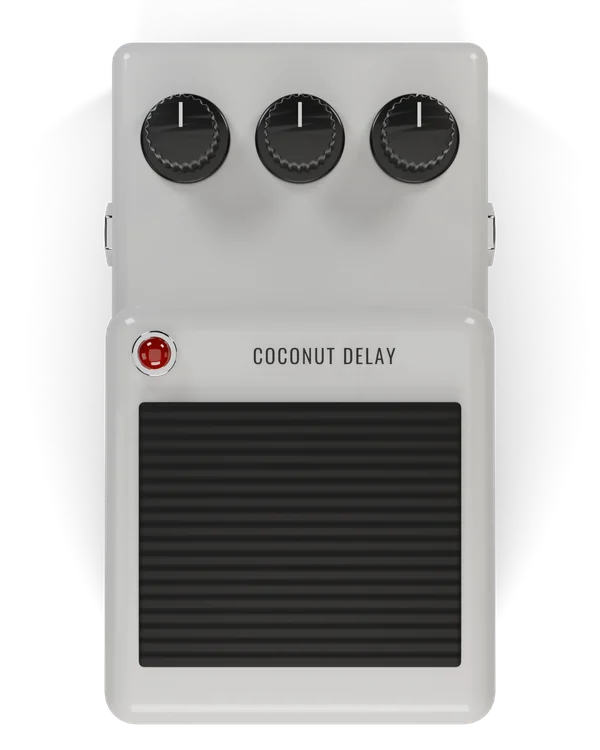
Coconut Delay
Delay branco com repetições que escurecem como numa fita. Ao desligar, as repetições terminam naturalmente.
White delay whose repeats darken like tape. Switch it off and the repeats fade out naturally.
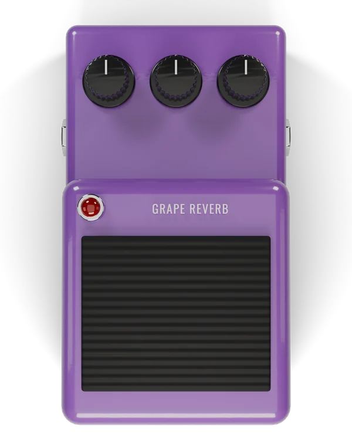
Grape Reverb
Reverb roxo, de uma sala pequena a um salão enorme. Efeito do próprio Nexus, sem captura.
Purple reverb, from a small room to a huge hall. Built into Nexus, no capture needed.
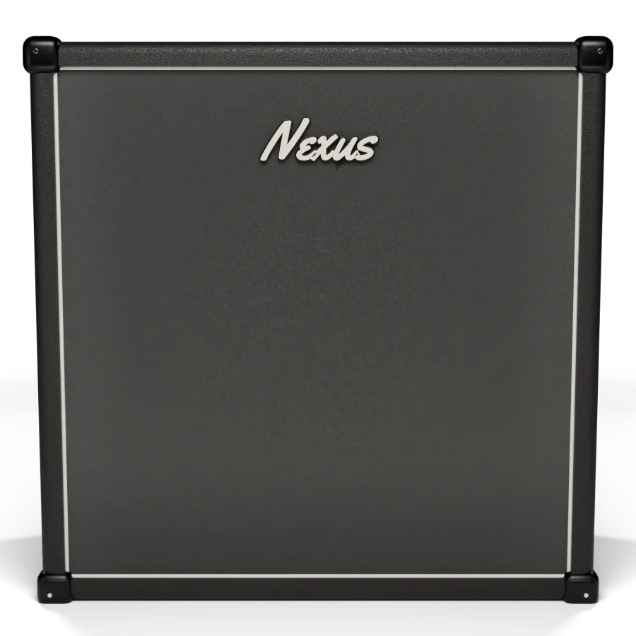
Caixa Brit 4x12Brit 4x12 cabinet
Caixa com quatro alto-falantes de 12 polegadas. Toque com a resposta de caixa que quiser (um arquivo .wav que guarda o som de uma caixa, chamado de IR). Se a captura já inclui a caixa (o chamado full rig), o Nexus percebe e trava a caixa sozinho, para não colorir o som duas vezes.
A cabinet with four 12-inch speakers. Play it with any cabinet response you like (a .wav file that stores how a cabinet sounds, called an IR). If the capture already includes the cabinet (a full rig capture), Nexus notices and locks the cabinet on its own, so the sound isn't colored twice.
Os equipamentos do Nexus são criações próprias, inspiradas em clássicos. Não usam nomes nem marcas de fabricantes.
Nexus gear is original work inspired by classics. It doesn't use manufacturer names or trademarks.
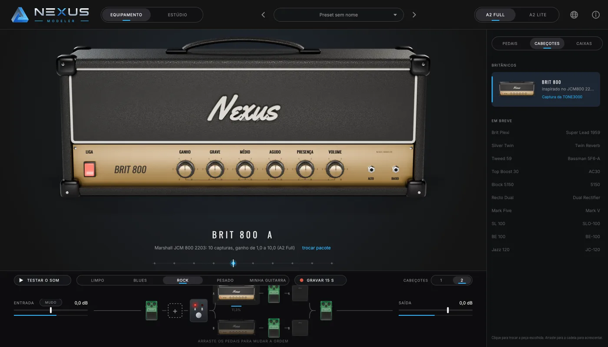
Cadeia de sinalSignal chain
Monte a pedaleira com o mouseBuild your rig with the mouse
O caminho do sinal fica no rodapé da tela. Clique em “+” para pôr um pedal e arraste para mudar a ordem.
The signal path sits at the bottom of the screen. Click “+” to add a pedal and drag to reorder.
Até 12 pedais, antes do cabeçote, entre o cabeçote e a caixa (para modulação, por exemplo) ou depois da caixa.
Up to 12 pedals, before the amp, between the amp and the cabinet (for modulation, say) or after the cabinet.
Dois cabeçotes com pedal A/B: cada lado tem cabeçote, pedais e caixa próprios. A troca de lado é suave, sem estalo.
Two amps with an A/B switch: each side has its own amp, pedals and cabinet. Switching sides is smooth, with no pop.
Até 3 canais por cabeçote, como no amplificador original, cada um com o próprio pacote de capturas.
Up to 3 channels per amp, like the original, each with its own capture pack.
Tudo salvo no projeto do seu programa de gravação.
Everything is saved with your recording project.
Fonte das capturasWhere captures come from
Capturas da TONE3000, dentro do programaTONE3000 captures, right inside the app
A TONE3000 é a maior biblioteca aberta de capturas, feitas por guitarristas e técnicos do mundo todo. Clique em “abrir pacote” embaixo do nome do equipamento e o Nexus mostra:
TONE3000 is the largest open library of captures, made by guitarists and engineers around the world. Click “open pack” under the gear's name and Nexus shows:
Recomendadas para aquele equipamento, escolhidas para ter uma captura por posição do botão;
Recommended packs for that gear, picked to have one capture per knob position;
Seus favoritos e downloads da sua conta, filtrados pelo equipamento;
Your favorites and downloads from your account, filtered by the gear;
Em alta e o catálogo completo;
Trending and the full catalog;
Inserir manualmente, para abrir uma pasta do seu computador.
Add manually, to open a folder on your computer.
O Nexus baixa só as capturas certas, uma por posição do botão, e monta o pacote sozinho.
Nexus downloads only the right captures, one per knob position, and builds the pack for you.
Crédito sempre à vista. A TONE3000 aparece como fonte em toda a janela, e cada captura mostra o nome de quem a criou. As capturas pertencem aos seus criadores.
Credit always in view. TONE3000 is shown as the source across the whole window, and every capture shows its creator's name. Captures belong to their creators.
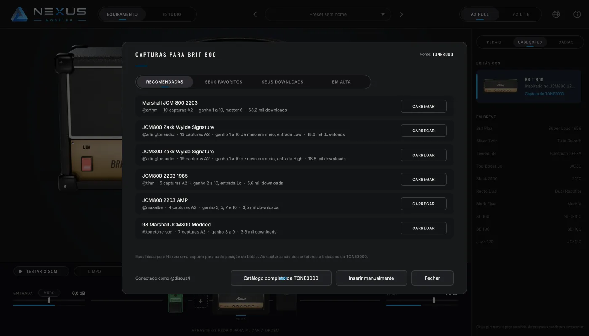
EstúdioStudio
Tire a guitarra da música e toque no lugarTake the guitar out of the song and play its part
Importe uma música (MP3, WAV, FLAC ou M4A) e o Nexus separa no seu próprio computador seis faixas: voz, guitarra, baixo, bateria, piano e o resto. A sua guitarra passa pela cadeia e se mistura com a música.
Import a song (MP3, WAV, FLAC or M4A) and Nexus splits it, on your own computer, into six tracks: vocals, guitar, bass, drums, piano and the rest. Your guitar runs through the chain and blends with the song.
Volume, mudo e solo em cada faixa, com medidor;
Volume, mute and solo on every track, with a meter;
Velocidade de 50 a 100% sem mudar o tom, e tom de −6 a +6 sem mudar a velocidade;
Speed from 50 to 100% without changing pitch, and pitch from −6 to +6 without changing speed;
Repetir A–B: arraste na forma da música para ensaiar só o trecho difícil;
A–B loop: drag across the waveform to rehearse just the hard part;
Playlists que tocam uma música atrás da outra, para o ensaio inteiro.
Playlists that play one song after another, for the whole rehearsal.
Separação no seu computador. Usa o Demucs de 6 faixas (Meta, licença MIT); o modelo de 55 MB é baixado só na primeira vez, e a mesma música nunca é separada duas vezes.
Separation on your computer. It uses 6-track Demucs (Meta, MIT license); the 55 MB model is downloaded only the first time, and the same song is never separated twice.
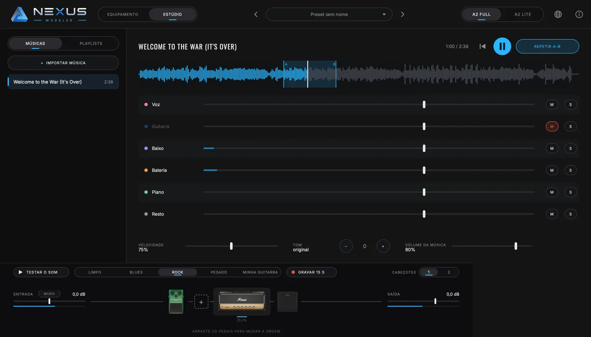
RecursosFeatures
Feito para tocar, gravar e ensaiarMade to play, record and rehearse
Troca sem cliqueClick-free swaps
Gire o ganho de 0 a 10 em degraus, ou de forma contínua misturando as capturas vizinhas.
Turn gain from 0 to 10 in steps, or continuously by blending neighboring captures.
Equalizador do circuitoCircuit-true tone stack
Grave, médio, agudo e presença modelados no circuito de cada família de amplificador.
Bass, middle, treble and presence modeled on each amp family's circuit.
Até 12 pedaisUp to 12 pedals
Cada pedal toca capturas de pedal, com drive em degraus, tom e nível. O pisante liga e desliga sem estalo.
Each pedal plays pedal captures, with stepped drive, tone and level. The footswitch toggles with no pop.
Dois cabeçotes A/BDual amps A/B
Dois equipamentos completos lado a lado, trocados por um pedal A/B.
Two complete rigs side by side, switched with an A/B pedal.
Caixa com IR da TONE3000Cabinet IRs from TONE3000
IRs recomendados da TONE3000 ou do seu computador; troque de microfone na própria caixa. Capturas com caixa inclusa travam a caixa sozinhas.
Recommended IRs from TONE3000 or from your computer; switch microphones on the cabinet itself. Captures that already include a cab lock it automatically.
A2 Full e A2 Lite
O mesmo arquivo serve nos dois modos: o mais fiel ou o mais leve para o processador.
The same file works in both modes: the most faithful, or the lightest on your processor.
Baixa latênciaLow latency
O programa independente fala direto com a interface de áudio (ASIO no Windows, Core Audio no Mac, JACK no Linux) para o atraso entre tocar e ouvir ser mínimo.
The standalone app talks straight to your audio interface (ASIO on Windows, Core Audio on Mac, JACK on Linux) so the delay between playing and hearing stays minimal.
MIDI por USB e BluetoothMIDI over USB and Bluetooth
Use sua pedaleira controladora: troque de canal pelo patch e ligue qualquer botão a um controle com “Aprender MIDI”.
Use your foot controller: switch channels with program changes and map any knob with “MIDI Learn”.
Testar o somTest the sound
Uma guitarra gravada limpa toca pela cadeia inteira, em Limpo, Blues, Rock ou Pesado, sem você precisar tocar. Ou grave 15 s da sua guitarra.
A clean recorded guitar plays through the whole chain, in Clean, Blues, Rock or Heavy styles, with no playing needed. Or record 15 s of your own guitar.
Capturas prontas na mãoCaptures ready in hand
Ao pegar o drive ou o ganho, as capturas vizinhas já aquecem antes do giro: a troca de distorção entra sem espera e sem engasgo.
When you grab drive or gain, the neighboring captures warm up before you turn it: gain changes land with no wait and no hiccup.
Relatório de problemasProblem reports
Algo deu errado? O Nexus abre uma issue no GitHub já preenchida com a versão, o sistema e os últimos erros, sem dados pessoais.
Something went wrong? Nexus opens a GitHub issue already filled in with the version, system and latest errors, with no personal data.
Qualquer taxa de amostragemAny sample rate
Seu projeto em 44,1, 48 ou 96 kHz (a “resolução” do áudio no tempo)? O Nexus converte sozinho.
Project at 44.1, 48 or 96 kHz (the audio's time resolution)? Nexus converts on its own.
30 mspara trocar de captura, sem cliqueto swap captures, with no click
6,5 msde ida e volta numa interface USB comum, medidos num Macround trip on an ordinary USB interface, measured on a Mac
1,4 %de um núcleo do processador por captura A2 Liteof one processor core per A2 Lite capture
15idiomas na telainterface languages
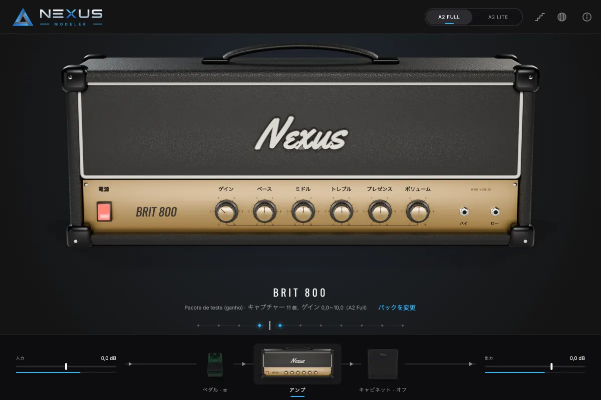
Fala a sua línguaSpeaks your language
O globo na barra de cima troca o idioma; na primeira vez, vale o do sistema. Os nomes dos botões são traduzidos por cima da imagem 3D.
The globe in the top bar switches language; the first time, it follows your system. Knob names are translated on top of the 3D image.
Português
English
Español
Français
Italiano
Deutsch
日本語
中文
한국어
हिन्दी
العربية
বাংলা
Русский
Bahasa Indonesia
Türkçe
BaixarDownload
Grátis. Para sempre.Free. Forever.
O instalador traz sempre a versão mais recente. Depois disso, o Nexus avisa e se atualiza sozinho.
The installer always brings the latest version. After that, Nexus tells you and updates itself.
macOS
macOS 11 ou mais novo, Intel e Apple SiliconmacOS 11 or newer, Intel and Apple Silicon
VST3 e programa independente · ASIO, WASAPI, DirectSound · MIDI por USB e BluetoothVST3 and standalone · ASIO, WASAPI, DirectSound · MIDI over USB and Bluetooth
Linux
Debian, Ubuntu, Mint e derivadosDebian, Ubuntu, Mint and derivatives